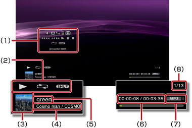

Música > Utilizar o painel de controlo das opções
Utilizar o painel de controlo das opções
Realize várias operações utilizando o painel de controlo no ecrã. É possível visualizar ou ocultar o painel de controlo das opções, premindo o botão  .
.
Controlo de Volume

Ajuste o nível de saída do volume de conteúdo reproduzido em  (Música). Pode seleccionar um de nove níveis.
(Música). Pode seleccionar um de nove níveis.
Nota
O som pode ficar destorcido se o nível de volume de saída for definido muito alto. Caso isto aconteça, baixe o nível do volume de saída.
Leitor Visual
Seleccione um dos vários fundos a serem apresentados durante a reprodução de conteúdo.
Nota
Não é possível mudar fundos do Leitor Visual enquanto se apresenta conteúdo de  (Fotografia) ou
(Fotografia) ou  (Navegador de Internet).
(Navegador de Internet).
Adicionar à lista de reprodução
Adicione conteúdo em reprodução à lista de reprodução.
Nota
Só é possível adicionar a um lista de reprodução os ficheiros de música guardados no disco rígido.
Eliminar
Elimine conteúdo em reprodução.
Nota
Só é possível eliminar os ficheiros de música guardados no disco rígido.
Apresentar
Visualize o estado e outras informações durante a reprodução. Os itens de informação variam consoante o conteúdo que estiver a ser reproduzido.

(1) |
Painel de Controlo |
|---|---|
(2) |
Ícone do estado |
(3) |
Ícone da faixa |
(4) |
Nome do artista / nome do álbum |
(5) |
Nome da faixa |
(6) |
Tempo decorrido da faixa / tempo total |
(7) |
Codec |
(8) |
Número da faixa / número total de faixas |
Anterior
Volta ao início da faixa actual ou anterior.
Seguinte
Avança para o início da faixa seguinte.
Retrocesso Rápido / Avanço Rápido
Reproduz o conteúdo em avanço rápido ou retrocesso rápido. Se premir e mantiver premido o botão  , o conteúdo será reproduzido em avanço rápido ou retrocesso rápido enquanto mantiver premido o botão.
, o conteúdo será reproduzido em avanço rápido ou retrocesso rápido enquanto mantiver premido o botão.
Reproduzir
Inicia a reprodução de conteúdo.
Pausa
Interrompe a reprodução temporariamente.
Parar
Pára a reprodução.
Repetir
Reproduz o conteúdo repetidamente. Pode seleccionar um dos três modos de repetição ao premir o botão .
 |
Reproduz um item de conteúdo repetidamente. |
|---|---|
|
Reproduz todo o conteúdo repetidamente. |
| Nenhuma apresentação | Cancela a repetição e reproduz todo o conteúdo por ordem. |
Aleatório
Reproduz o conteúdo aleatoriamente.